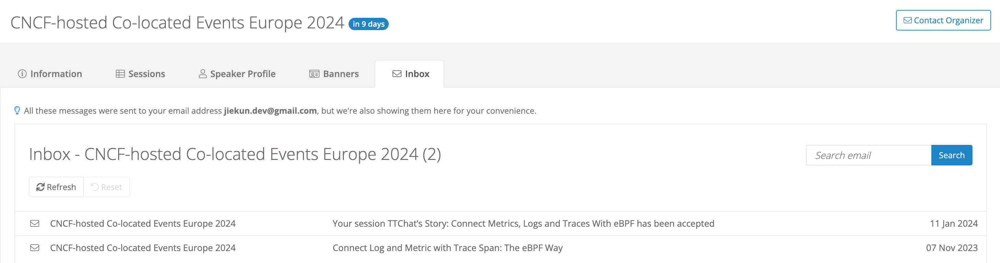

KubeCon 欧洲 2024: 云原生在浪漫之都 | 序幕: 启航
现在离 KubeCon + CloudNativeCon Europe 2024 开幕还有 1 周零 2 天，我正在收拾前往巴黎的行李。
为什么参加
2023 年我参加了 KubeCon + CloudNativeCon + Open Source Summit China，会后我说，议题投稿和到场参与的人数（598 份投稿，1600 人参与）比起欧美（平均 1800 份投稿，9700 人参与）的同级活动还是少了一些。如果有好的故事，我还是想在更大的舞台分享一下的，开阔眼界，也好认识更多的人。
欧美的 KubeCon + CloudNativeCon 通常分为 4 天活动，其中，第 1 天为 Co-Located Events。这些 Co-Located Events 通常更专注于单个方向、特定项目，例如我所关注的 Observability Day 是可观测性领域的活动，在去年北美举办时，平均每场分享有 254 人参与。
我觉得在时间有限的技术分享中，很难兼顾不同层次的听众，所以 Co-Located Events 提供了很好的舞台，听众有相关的领域背景，演讲者就可以减少铺垫，把更多时间放在主题本身。
Co-Located Events 后的 3 天是主论坛分享，以及众多项目、厂商的展台开门接客。比起分享本身，我觉得能去展台游览，与社区的 Maintainer 对话更有吸引力。例如近期我们正在尝试从 Prometheus 迁移到 VictoriaMetrics，正好 VictoriaMetrics 是本次活动的赞助商之一，也有自己的展位，我准备了一些问题想和他们切磋：
- VictoriaMetrics 未来还会一直兼容 Prometheus 的协议和特性吗，有没有想过取而代之并且引领行业标准？
- VictoriaMetrics 虽然在性能和资源开销上有优势，但是 Prometheus 有庞大的社区支持，更多的活跃开发者。VictoriaMetrics 在社区建设上有什么想法呢？
同样，可观测性领域最大的社区 OpenTelemetry 也组织了自己的大型展台，现场的活动包括 User Feedback Session（面向用户 & Maintainer）、Humans Of OTel 采访（面向 Maintainer、Governance Committee 等）、OTel Project Leadership 会议等等。我期望能在现场听一下大家的讨论，因为实际遇到的问题和反馈可能比分享更容易让人吸取经验教训。
其他我会关注的展台包括 Grafana，他们的 eBPF 项目 Grafana Beyla 非常吸引人。噢，如果 Prometheus 也有自己的展台，我希望它能开在 VictoriaMetrics 展台旁边，方便两个社区的人友好交流。
CFP
KubeCon + CloudNativeCon 的 CFP 通常在活动前 6 个月开启，投递窗口 2 个月，评审大约在 1 个月后出结果。

和我过往博客介绍的流程一样，我的 CFP 在提交前修改过很多轮，也从社区的同学中得到了一些新的 Review 建议。在未来的 CFP 中，我会格外注重：
- 明确我是 End User 还是 Vendor，例如以 {$CompanyName}’s Story 开头，这是一个非常典型的 End User 视角标题；
- 我过去喜欢在结尾说“听众可以从中学到管理监控指标的经验”，或许明确具体他们可以做的事情会更好，例如“听众可以避免我们处理高基数指标犯的错，并且学会构建一套预先过滤高基数指标的中间件”。
另外老生常谈的 CFP 重点就是明确你的分享对社区和生态有什么好处，以及如何证明你是一个有经验的分享者，这些也在上文的博客中介绍过。我觉得官方的 Reviewer Guidelines 中丰富的评分要点也可以作为参考。
官方通过 Inside the Numbers 博客公布了本次活动主论坛的 CFP 情况，本次共计收到了 2541 份投稿，接收了其中的 233 个演讲，接收率仅为 9%，投稿人数及接收率均为历史新高/新低。而我参与的 Observability Day 共接收 28 个演讲，接收率为 11%。
签证
因为 CFP 公布结果时离活动开始只剩 70 天，对于前往海外参与的同学，最首要的任务是：拿到签证。
70 天听起来似乎还有比较宽裕的时间，但是 1 月中旬时，广州的法国签证递时间交最早已经预约到 20 天之后了，在这个期间要准备签证所需的许多材料，签证递交后领事馆需要 5 - 10 个工作日才能返回结果，并且如果没能在春节前审批完毕，就要额外浪费 8 天；更重要的是如果首次签证没有下签，重新预约、递交、审核时间将会更加紧迫，很可能在活动开始前几天才能收到签证。
Linux Foundation 为参加活动的人提供 Visa 邀请函，这有助于提高签证通过的概率，特别是对一些下签较为严格的国家和地区。但是无论如何，都应该在确认参与之后尽快处理签证问题，最好可以提前将签证递交时间预约在 CFP Notification 后的 4 - 5 天，并提前准备除 Visa 邀请函外的所有材料，然后在收到邀请函之后就可以马上递交。
演讲幕后
我从 1 月 17 日开始准备这次演讲的材料，到 2 月 22 日 Slides 才大致成型，然后到 3 月 5 日完成英语的演讲者备注，预留大约 10 天熟悉演讲内容和排练。
或许英语演讲对内容表达确实有很大的影响，我觉得很多写在最初中文稿的内容都没能顺利表达出来。
我的大部分演讲内容都是由 ChatGPT 翻译的，逐句 Prompt 的同时也还要把不熟悉、拗口的词汇剔除，尽量口语化。不得不说 ChatGPT 在保持较为稳定翻译质量的前提下，大大地减少了我的工作量。很难想象如果依赖 Google 翻译，我需要花多少时间去修正。
当然翻译只是演讲准备的其中一部分，另一部分则是对照自动朗读纠正发音，确保语言不会成为分享交流的障碍。
启航
这篇博客是「KubeCon 欧洲 2024: 云原生在浪漫之都」系列的第一章，即活动前的准备工作。接下来还会更新另外两章，分别对应我的分享内容及会场见闻。
如开篇与家人的对话，考虑到欧洲行的机会难得，后续工作安排上也没有更多的时间外出，我将带上少量设备来记录这次旅程。期望能在 Paris Expo Porte de Versailles 见到你！